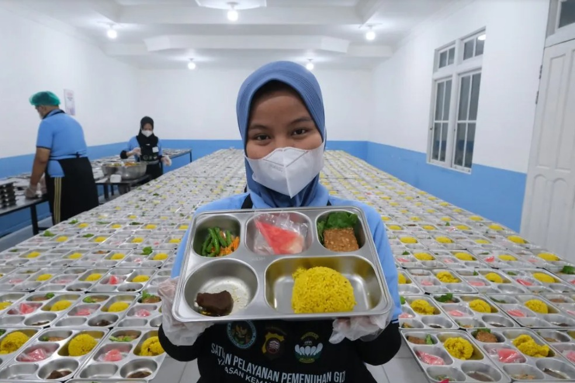
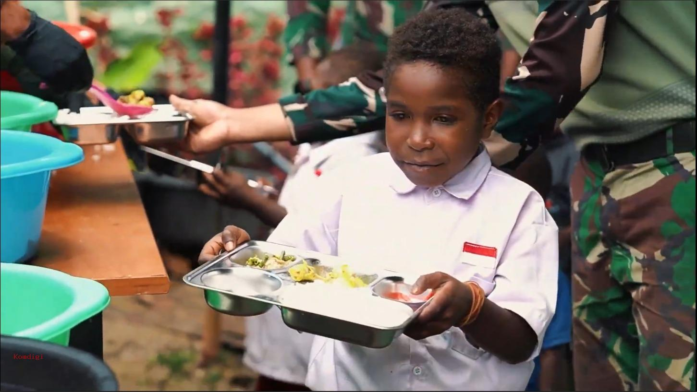
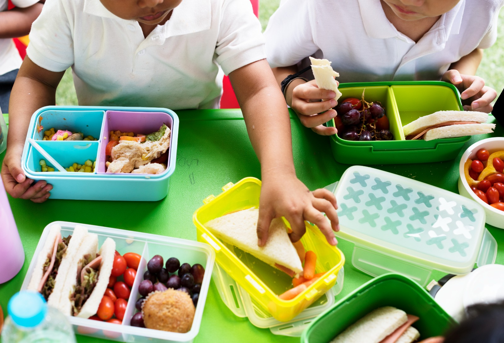
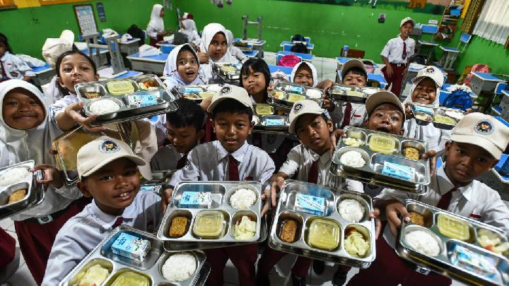
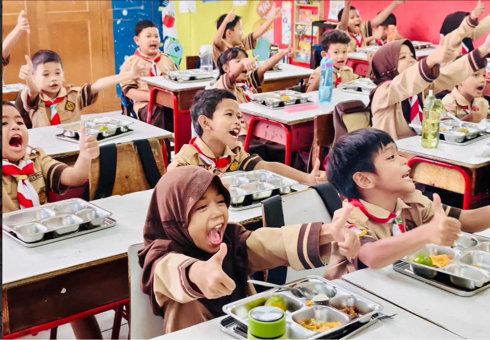

Mewujudkan Generasi Emas 2045 melalui akses makanan bergizi gratis secara merata untuk anak sekolah, ibu hamil, dan balita di seluruh penjuru Indonesia.

Makan Bergizi Gratis (MBG) bukan sekadar program pemberian makanan, melainkan intervensi strategis negara untuk mencetak Sumber Daya Manusia (SDM) yang unggul dan kompetitif di kancah global.
Program ini diatur dengan standar operasional prosedur (SOP) ketat yang melibatkan ahli gizi tersertifikasi, dinas kesehatan daerah, dan memanfaatkan hasil panen dari petani lokal untuk menghidupkan sirkulasi ekonomi kerakyatan.
Penyediaan pangan berkualitas dan aman konsumsi.
Nutrisi spesifik untuk perkembangan sel otak anak.
Potret nyata kebersamaan dan senyum generasi penerus bangsa saat menerima manfaat dari program Makan Bergizi Gratis di berbagai titik wilayah.



Mekanisme penyaluran makanan bergizi diawasi secara ketat dari hulu ke hilir untuk memastikan standar gizi dan keamanan kebersihan (higienitas).
Satuan Pelayanan (Dapur Umum) membeli bahan baku segar berupa beras, sayur, telur, susu, dan daging langsung dari petani, peternak, dan UMKM lokal di sekitar sekolah.
Bahan mentah diolah di Dapur Satuan Pelayanan yang tersertifikasi. Menu diawasi oleh Ahli Gizi untuk memenuhi takaran kalori, protein, dan vitamin sesuai usia anak.
Makanan yang sudah dikemas dalam wadah higienis (*food grade*) didistribusikan ke sekolah-sekolah sasaran untuk dikonsumsi bersama pada jam istirahat atau jam makan siang.
Distribusi yang berkeadilan difokuskan pada kelompok masyarakat yang krusial untuk masa depan bangsa.
Siswa PAUD, SD, SMP, SMA, SMK, Madrasah dan pesantren sederajat di seluruh provinsi.
Pemberian gizi ekstra pada masa *Golden Age* (pertumbuhan emas) otak anak.
Pemenuhan asam folat, zat besi, dan protein untuk mencegah anak lahir stunting.
Prioritas implementasi awal untuk daerah Tertinggal, Terdepan, dan Terluar (3T).
Pemerintah mengundang UMKM, Koperasi, Petani, dan Pemasok bahan pangan lokal untuk bergabung menjadi rantai pasok dalam ekosistem Makan Bergizi Gratis.